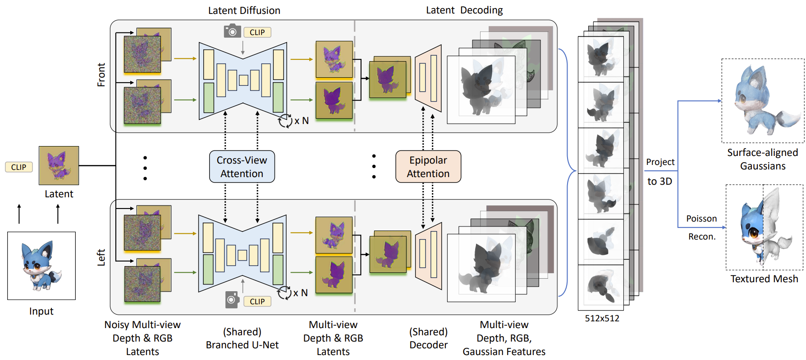
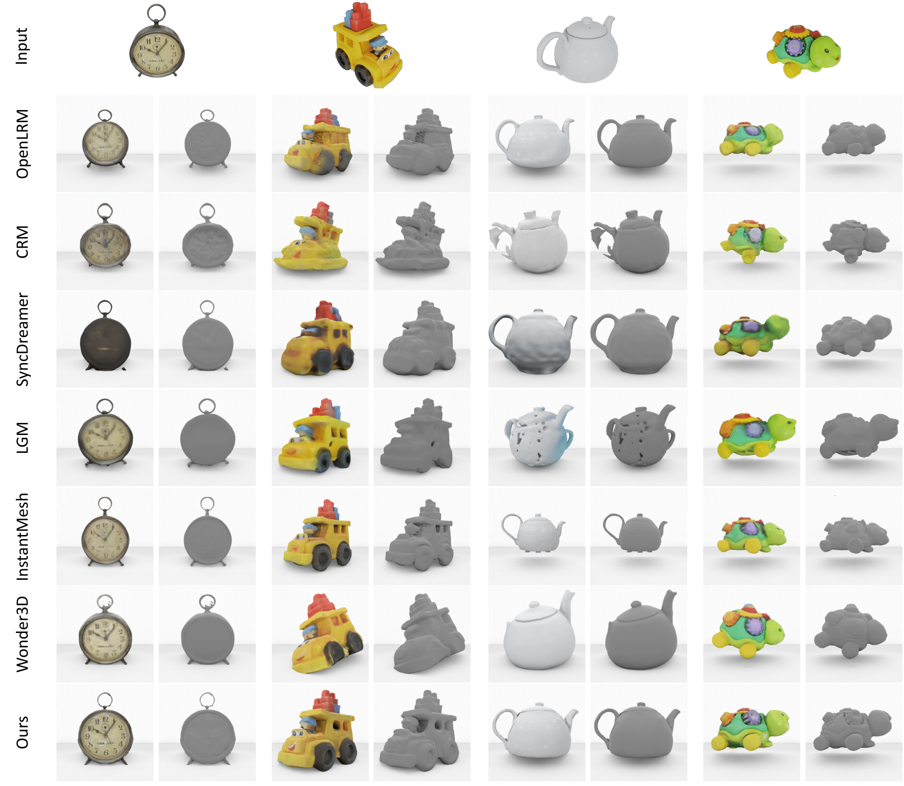

Direct and Explicit 3D Generation from a Single Image
3DV 2025
Haoyu Wu, Meher Gitika Karumuri, Chuhang Zou, Seungbae Bang, Yuelong Li, Dimitris Samaras, Sunil Hadap,
Stony Brook University, Amazon
We compare against baseline methods and shows results of our approach.
Abstract
Current image-to-3D approaches suffer from high computational costs and lack scalability for high-resolution outputs. In contrast, we introduce a novel framework to directly generate explicit surface geometry and texture using multi-view 2D depth and RGB images along with 3D Gaussian features using a repurposed Stable Diffusion model. We introduce a depth branch into U-Net for efficient and high quality multi-view, cross-domain generation and incorporate epipolar attention into the latent-to-pixel decoder for pixel-level multi-view consistency. By back-projecting the generated depth pixels into 3D space, we create a structured 3D representation that can be either rendered via Gaussian splatting or extracted to high-quality meshes, thereby leveraging additional novel view synthesis loss to further improve our performance. Extensive experiments demonstrate that our method surpasses existing baselines in geometry and texture quality while achieving significantly faster generation time.
Method
Our method is a feed-forward image-to-3D model. Given an input image, we generate depth and RGB latent images from six orthographic views via simultaneous multi-view diffusion. The process is conditioned on input latent, input CLIP embedding, and cameras. We incorporate a branched U-Net for efficient and high-quality cross-domain diffusion. For each view, we channel-concatenate depth and RGB latents and decode it to depth, RGB, and Gaussian features in pixel space (512x512 resolution). We add epipolar attention in the decoder, which is crucial for generating pixel-level multi-view consistent depths. We lift our output (RGB and opacity from Gaussians) into 3D space via depth unprojection, creating high-quality textured mesh via Poisson surface reconstruction. Additionally, our lifted surface-aligned 3D Gaussians enable novel view synthesis via Gaussian splatting, allowing additional gradient decent loss from NVS.
Results
Qualitative results on GSO dataset. We visualize the input single image and the resulting 3D mesh (with and without textures) for our method and baselines. Our approach achieves higher mesh quality in terms of both geometry and texture.
Acknowledgements
- This work was done during my internship at Amazon.
- The website template was borrowed from Mip-NeRF 360 and VolSDF.